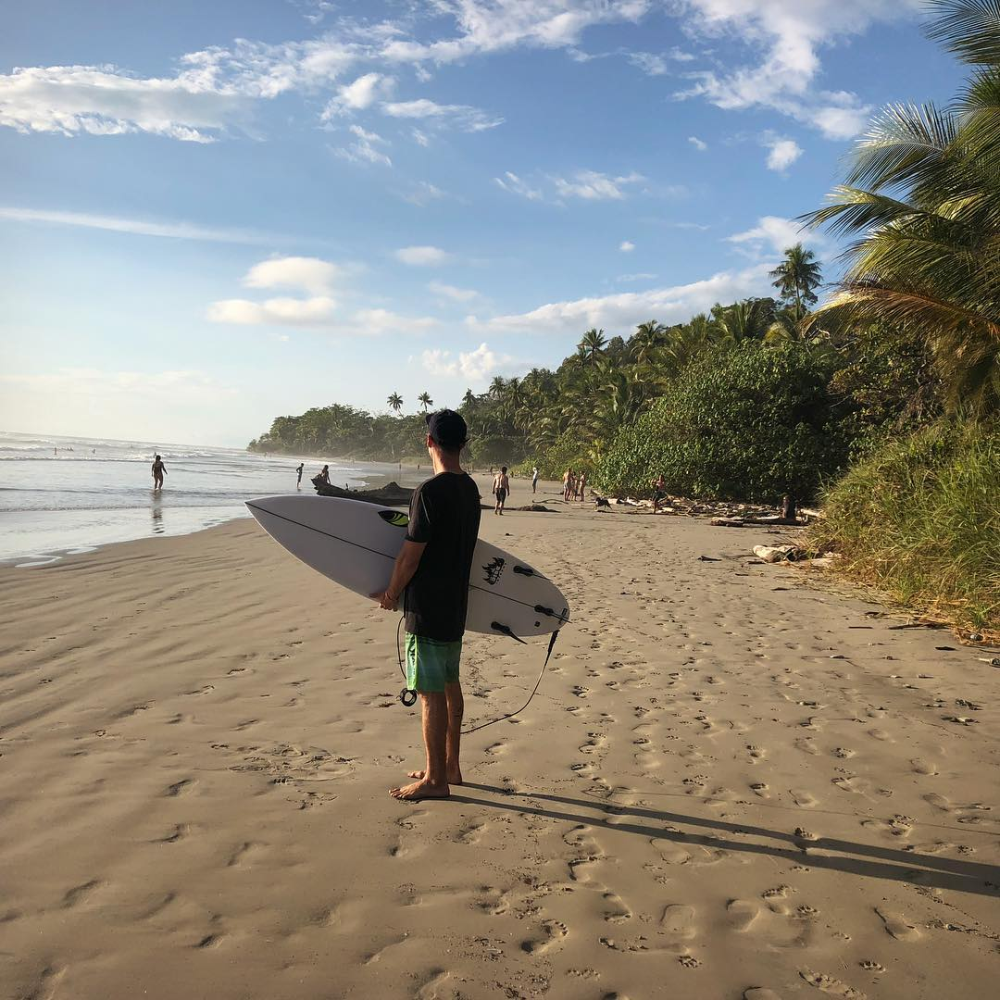

I am an analytical and creatively mindeded SaaS sales representative, working towards shifting my career into full stack web development. Inspired by the impact that my current employer’s technology is having in improving peoples lives, I have recently begun my journey to become a web developer at UC San Diego. For the next 24 weeks, I will be drinking from a fire hose as I work to complete an intensive boot camp. I look forward to growing my existing knowledge of technologies and my skill set, as I take on many projects and networking with other professionals in the community.
I enjoy traveling to near and far places and value gaining new perspectives of life. I spend most of my free time outdoors and one of my proudest achievements was completion of the John Muir Trail; a 210 mile hike, across some of the most beautiful stretch of landscapes in California. My other interests include reading, music, cooking, and surfing (in no particular order). Suggestions in any of these categories are welcomed and encouraged!